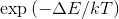

Nie jest to klasyczny model Isinga, bo używa sąsiedztwa Moore'a, a nie von Neumanna. Użyty został klasyczny algorytm Metropolisa, gdzie domena jest odwracana zawsze, gdy ΔE<0, a w przeciwnym wypadku z prawdopodobieństwem . Do ΔE można dodać dodatkowy człon F, odpowiedzialny za tarcie. Użyłem terra.js. Kod symulacji.
Namagnesowanie M=
Temperatura T=
Pole B=
Tarcie F=